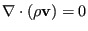
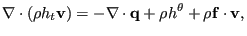
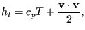
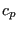
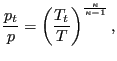
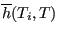

Next: Hydraulic Networks Up: Types of analysis Previous: Diffusion mass transfer in Contents
Aerodynamic networks are made of a concatenation of network elements filled with a compressible medium which can be considered as an ideal gas. An ideal gas satisfies
| (379) |
where p is the pressure,  is the density,
is the density,  is the specific gas
constant and
is the specific gas
constant and  is the absolute temperature. A network element (see
section 6.2.33) consists of three nodes: in the corner nodes
the temperature and pressure are the unknowns, in the midside node the mass
flow is unknown. The corner nodes play the role of crossing points in the
network, whereas the midside nodes represent the flow within one element. To determine these unknowns, three types of equations are
available: conservation of mass and conservation of energy in the corner nodes
and conservation of momentum in the midside node. Right now, only stationary
flow is considered.
is the absolute temperature. A network element (see
section 6.2.33) consists of three nodes: in the corner nodes
the temperature and pressure are the unknowns, in the midside node the mass
flow is unknown. The corner nodes play the role of crossing points in the
network, whereas the midside nodes represent the flow within one element. To determine these unknowns, three types of equations are
available: conservation of mass and conservation of energy in the corner nodes
and conservation of momentum in the midside node. Right now, only stationary
flow is considered.
The stationary form of the conservation of mass for compressible fluids is expressed by:
|  | (380) |
where
 the velocity vector. Integration
over all elements connected to corner node i yields:
the velocity vector. Integration
over all elements connected to corner node i yields:
 |
(381) |
where
 is the mass flow from node i to node j or vice versa. In
the above equation
is the mass flow from node i to node j or vice versa. In
the above equation
 is always positive.
is always positive.
The conservation of momentum or element equations are specific for each type
of fluid section attributed to the element and are discussed in Section
6.4 on fluid
sections. For an element with corner nodes i,j it is generally of the form
 (for positive
(for positive
 , where p is
the total pressure and
, where p is
the total pressure and  is the total temperature), although more
complex relationships exist. Notice in particular that the temperature pops up
in this equation (this is not the case for hydraulic networks).
is the total temperature), although more
complex relationships exist. Notice in particular that the temperature pops up
in this equation (this is not the case for hydraulic networks).
The conservation of energy for an ideal gas in stationary form requires ([26], see also Equation (30)):
|  | (382) |
where
 is the external heat flux,
is the external heat flux,
 is the body flux per
unit of mass and
is the body flux per
unit of mass and
 is the body force per unit of mass.
is the body force per unit of mass.  is
the total enthalpy satisfying:
is
the total enthalpy satisfying:
|  | (383) |
where  is the specific heat at constant pressure and  is the
absolute temperature (in Kelvin). This latter formula only applies if is
considered to be independent of the temperature. This is largely true for a
lot of industrial applications. In this connection the reader be reminded of
the definition of total temperature and total pressure (also called stagnation
temperature and stagnation pressure, respectively):
is the
absolute temperature (in Kelvin). This latter formula only applies if is
considered to be independent of the temperature. This is largely true for a
lot of industrial applications. In this connection the reader be reminded of
the definition of total temperature and total pressure (also called stagnation
temperature and stagnation pressure, respectively):
| (384) |
and
|  | (385) |
where
 .
.  and
and  are also called the static
temperature and static pressure, respectively.
are also called the static
temperature and static pressure, respectively.
If the corner nodes of the elements are
considered to be large chambers, the velocity
 is zero. In that
case, the total quantities reduce to the static ones, and integration of the energy equation over all elements belonging to end
node
is zero. In that
case, the total quantities reduce to the static ones, and integration of the energy equation over all elements belonging to end
node  yields [19]:
yields [19]:
 |
(386) |
where  is the convection coefficient with the walls. Notice that, although this is not really correct, a slight temperature dependence of is provided for. If one assumes that all flow entering a node must also leave it and taking for both the value corresponding to the mean temperature value of the entering flow, one arrives at:
 |
(387) |
where
 .
.
The calculation of aerodynamic networks is triggered by the *HEAT TRANSFER keyword card. Indeed, such a network frequently produces convective boundary conditions for solid mechanics heat transfer calculations. However, network calculations can also be performed on their own.
A particularly delicate issue in networks is the number of boundary conditions which is necessary to get a unique solution. To avoid ending up with more or less equations than unknowns, the following rules should be obeyed:
Output variables are the mass flow (key MF on the *NODE PRINT or *NODE FILE card), the total pressure (key PN -- network pressure -- on the *NODE PRINT card and PT on the *NODE FILE card) and the total temperature (key NT on the *NODE PRINT card and TT on the *NODE FILE card). Notice that the labels for the *NODE PRINT keyword are more generic in nature, for the *NODE FILE keyword they are more specific. These are the primary variables in the network. In addition, the user can also request the static temperature (key TS on the *NODE FILE card). Internally, in network nodes, components one to three of the structural displacement field are used for the mass flow, the total pressure and the static temperature, respectively. So their output can also be obtained by requesting U on the *NODE PRINT card.